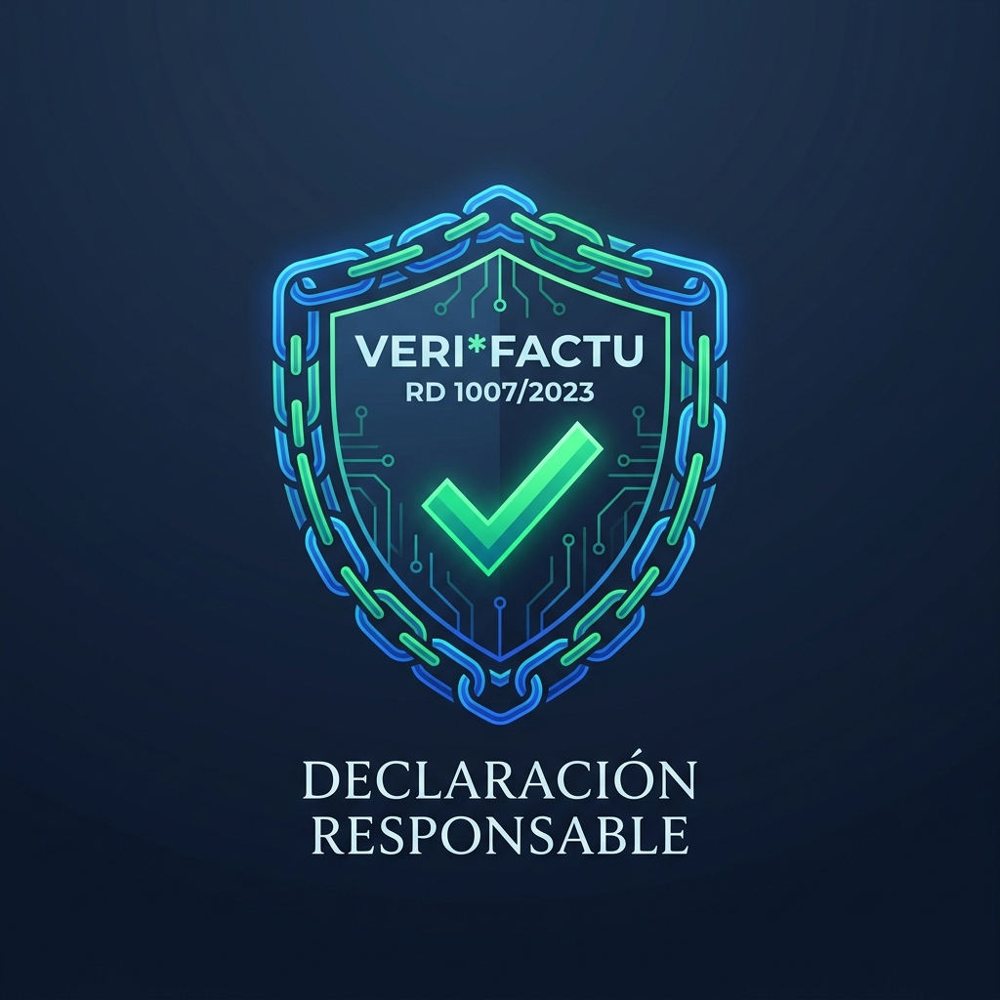

VeriFree.exe portátil para Windows (14 MB), completo en Modo Pruebas, sin instalador, sin registro y sin tarjeta. Si Windows SmartScreen muestra un aviso, pulsa Más información y después Ejecutar de todas formas.
Comprobar en PowerShell: Get-FileHash .\VeriFree.exe -Algorithm SHA256
Fin del alquiler perpetuo de software
¿Por qué pagar cuotas de por vida por cumplir con Hacienda?
Casi todo el mercado ha eliminado la compra de programas: ahora todo son suscripciones mensuales que te cobran indefinidamente por emitir facturas. Con VeriFree el programa es tuyo y nunca pagarás una cuota obligatoria para facturar.
Prestaciones y Costes
VeriFree Facturación
ÚNICO 100% LIBRE
Plataformas Cloud
SaaS / Alquiler
Software Clásico
Escritorio tradicional
Web Oficial AEAT
Básico público
Costes y Licenciamiento
Precio de adquisición
0 € (código libre) o 89 € (pago único)
15 € a 40 € / mes (lo habitual; los planes gratis suelen ser muy recortados)
240 € a 580 € / año (mantenimiento habitual para tener Veri*Factu)
0 € (gratuito)
Coste acumulado a 3 años
0 € o 89 €
540 € a 1.440 €
720 € a 1.740 €
0 €
Límite de facturas gratis
ILIMITADAS
Unas pocas al mes
Sin soporte ni Veri*Factu
Ilimitadas (manual)
Cuotas obligatorias para emitir
Ninguna (0 € / mes)
Mensuales obligatorias
Anuales obligatorias
Ninguna
Actualizaciones normativas ante cambios legales
✓ Opcionales y sin cuotas forzosas (sin alquiler forzoso; Plan Tranquilidad opcional)
Alquiler mensual forzoso (180 € a 480 €/año; si dejas de pagar, pierdes el acceso)
Mantenimiento anual obligatorio (240 € a 580 €/año para tener versiones legales)
✓ En su propia web (mantiene su formulario básico)
Cumplimiento Legal y Formatos
VERI*FACTU automático mTLS (AEAT)
✓ Incluido e ilimitado
Solo en planes de pago
Solo con contrato anual
✓ Manual en su web
Factura Electrónica UBL 2.1 con firma XAdES
✓ Automática en segundo plano
Según plan contratado
Módulo extra de pago
✗ No genera UBL ni firma XAdES
Libro registro IVA e IRPF en Excel (.xlsx AEAT)
✓ Exportación en 1 clic
CSV genérico
✓ Incluido
✗ No exporta libros
Facturas PDF con QR reglamentario
✓ Con leyenda oficial
Marcas de agua en versión gratis
✓ Incluido
✗ Formato rígido no editable
Operativa y Automatización
Facturas recurrentes por lotes
✓ Incluidas e ilimitadas (plantillas periódicas sin duplicados)
Solo en planes avanzados (requiere cuotas mensuales altas)
✓ Incluidas (en versiones completas)
✗ No disponible (manual factura a factura)
Remesas de adeudos SEPA XML
✓ pain.008.001.02 incluido (con mandatos y justificante en PDF)
Planes premium de pago (o pasarelas externas con comisión)
Módulo extra o soporte (requiere cuota anual activa)
✗ No disponible (sin gestión bancaria)
Privacidad, Control y Rendimiento
Ubicación de tus datos
100% en tu PC (SQLite local)
Servidores en la nube de terceros
En tu PC o servidor local
Solo registros en la AEAT
Funciona sin conexión a internet
✓ Sí (reintenta al volver la red)
✗ No (requiere internet permanente)
✓ Sí
✗ No
Multiempresa y multiautónomo
✓ Ilimitadas sin recargo
Pago extra por cada NIF
Según versión adquirida
Cambio manual de certificado
Auditoría del código fuente
✓ 100% visible y auditable (inspeccionable ante la AEAT; sin dobles cajas)
✗ Código cerrado y opaco (caja negra en servidores ajenos)
✗ Binario cerrado (sin posibilidad de auditar)
✓ Web pública oficial (propiedad de la AEAT)
Ver auditoría técnica y detalles de ingeniería
Arquitectura y Blindaje Antifraude
Inmutabilidad por triggers de base de datos
✓ Triggers SQLite inalterables
Opaco en la nube
Bases de datos tradicionales
No aplica
Sincronización horaria con el Observatorio de la Armada (ROA)
✓ NTP oficial según Orden HAC/1177/2024
Servidor del proveedor
Reloj local de Windows
Servidor AEAT
Editor de borradores con autoguardado en tiempo real
✓ Autoguardado continuo
✓ Dependiente de red
Guardado manual
✗ Sin borradores
Rendimiento de interfaz
Nativa 60 fps (.NET 10 / WPF)
Lenta por red y navegador
Aceptable
Lenta (web estática)
Copia de seguridad y migración
Copiar carpeta Empresas y listo
Exportaciones parciales
Asistente de respaldo
No guarda facturas
Ingeniería sólida
Todo lo que exige la ley, sin complicaciones
Cumple con VERI*FACTU y con la factura electrónica obligatoria (Ley Crea y Crece) tanto si eres autónomo como pyme, sin complicaciones técnicas.
Remisión Automática VERI*FACTU a la AEAT
Cada factura, rectificativa o anulación se envía sola a Hacienda con tu certificado digital, encadenada a la anterior para que nadie pueda alterarla después. Si no hay conexión o la AEAT va lenta, lo vuelve a intentar sin que hagas nada y te avisa de lo que falta por enviar.
Factura Electrónica Estructurada
Cada factura genera su versión electrónica en el estándar europeo oficial (UBL 2.1 con firma digital XAdES), válida para entregar a clientes autónomos, empresas o la administración pública según la Ley Crea y Crece, firmada en segundo plano con tu certificado mientras sigues trabajando.
Libro Registro Oficial en Excel
Exporta en un clic el libro registro de facturas expedidas en el formato de la AEAT: un Excel con el IVA y el IRPF, listo para entregar a tu asesoría.
Borradores con Autoguardado
Edita a pantalla completa. Los borradores se guardan solos mientras escribes y el programa te dice qué falta antes de emitir. Antes de emitir, revisa la vista previa del PDF.
Multiempresa Ilimitada
Lleva la facturación de varias empresas o autónomos desde el mismo programa, cada una con sus datos, su numeración y su configuración por separado.
Facturas Recurrentes
Guarda como plantilla las facturas que repites cada periodo, con su cliente, sus líneas y su forma de pago. Cuando toca, VeriFree prepara de una vez los borradores de todas para que los revises y los emitas, y recuerda qué periodos ya generó para que ninguna se duplique.
Remesas de Adeudos SEPA
Elige las facturas domiciliadas y genera el fichero de adeudos directos SEPA para subirlo a tu banco, con un PDF justificante de cada remesa. Guarda los mandatos de tus clientes, con su referencia y su fecha de firma, y el historial de las remesas en las que ha ido cada factura.
Actualizaciones sin Ataduras
Evoluciona con la normativa de la AEAT y la Ley Crea y Crece sin cuotas mensuales forzosas: mantén tu ejecutable oficial siempre al día con el Plan Tranquilidad opcional o accede al código fuente en GitHub como base técnica transparente y auditable.
Ver detalles técnicos
VERI*FACTU: registro de facturación encadenado con huella SHA-256 y enviado por el servicio web de la AEAT (SOAP con certificado, mTLS), con su control de flujo y reintentos.
Factura electrónica: UBL 2.1 según el anexo I de la Orden HAC/1028/2026, firmada con XAdES y validada contra los esquemas de OASIS.
Remesas: adeudos directos SEPA en formato pain.008.001.02.
Actualizaciones: arquitectura modular para incorporar los futuros servicios telemáticos de factura electrónica de la AEAT sin comprometer el histórico local ni obligar a suscripciones forzosas.
Datos: una base de datos SQLite local por empresa.
Programa: aplicación nativa de Windows en .NET 10 y WPF.
Interfaz limpia y accesible
Diseñado para trabajar rápido en Windows
Un programa de Windows de verdad: rápido, sin esperas de carga ni distracciones.
Listado correlativo inmutable, totales del trimestre en tiempo real, desglose de bases y estado directo de cada registro en la AEAT con CSV oficial.
Facturas PDF con validez legal inmediata
Cada factura emitida incorpora de forma nativa el código QR reglamentario y la leyenda obligatoria «Factura verificable en la sede electrónica de la AEAT». Tus clientes pueden escanear el código y comprobar al instante que la factura está debidamente registrada en Hacienda.
Incluye desglose por tipos de IVA, retención de IRPF configurable por línea, formas de pago (transferencia, Bizum, domiciliación) y leyendas personalizadas.
Código QR oficial de cotejo Sin marcas de agua
Formato estándar europeo UBL 2.1 con firma XAdES
VeriFree implementa el anexo I completo de la Orden HAC/1028/2026. Cada factura genera automáticamente su archivo XML UBL 2.1 estructurado, firmado digitalmente con XAdES en segundo plano sin ralentizar el uso del programa.
Las facturas electrónicas firmadas se archivan de manera organizada por empresa, ejercicio y mes, listas para su entrega a clientes autónomos, empresas o a la administración pública.
Validado contra esquemas OASIS Firma XAdES Enveloped
Doble alternativa frente al alquiler SaaS
Tú eliges cómo tener VeriFree: Gratis o Pago Único
Casi todo el mercado te obliga a pagar entre 180 € y 580 € cada año en cuotas que nunca terminan. En VeriFree tú decides: puedes compilarlo 100 % gratis desde GitHub, o adquirir la Licencia Oficial con un único pago de 89 € para siempre sin mensualidades obligatorias.
Modalidad del Mantenimiento Opcional:
Descarga Inmediata100% Gratuito para probar
Prueba VeriFree en tu ordenador antes de comprar
Descarga directa del ejecutable oficial preconfigurado en Modo Pruebas. Crea tu empresa, comprueba la rapidez nativa de la interfaz, emite facturas simuladas con hash encadenado SHA-256, obtén el PDF con su código QR y exporta el libro Excel oficial. Por imperativo legal, esta versión tiene bloqueada la remisión definitiva a Producción.
Para desarrolladores y perfiles técnicos que desean auditar el código o compilar con su propio NIF.
0 €
gratis para siempre
Sin límite de facturas · Código abierto en GitHub · Sin soporte
El código fuente íntegro en GitHub, para auditarlo o compilarlo tú con el SDK de .NET 10.
Tú eres el productor del software: compilas con tu NIF y emites tu propia declaración responsable ante la AEAT.
Código publicado «as-is»: libre para auditar, estudiar o adaptar por tu cuenta, sin compromiso de paridad temporal ni calendario de actualizaciones.
Licencia de uso interno: autoriza el uso propio en tu actividad o despacho; prohibida terminantemente la reventa, distribución a terceros, marca blanca o cobro de servicios de soporte.
Para autónomos y empresas que quieren pagar una sola vez, descargar y facturar para siempre sin tocar código.
89 €
+ IVA (un solo pago)
107,69 € con IVA incluido · Sin cuotas de alquiler · El programa es tuyo
Pagas una vez y es tuyo para siempre: sin cuotas, sin caducidad y sin límite de facturas ni de empresas.
Ejecutable oficial firmado para Windows, listo para descargar y empezar a facturar de inmediato.
Telytec Ingenieros, S.L. es el productor oficial ante la AEAT, con NIF validado en su censo.
Declaración responsable oficial incluida: te protege frente a las sanciones de 50.000 € (art. 201 bis LGT).
Facturas recurrentes y remesas SEPA XML incluidas sin coste extra ni módulos adicionales.
Producto terminado para la ley actual: tu programa no caduca ni exige suscripción. Soporte y actualizaciones normativas disponibles en el Plan Tranquilidad.
Instalación remota de VeriFree, configuración de tu certificado digital FNMT/DNIe, datos fiscales, series y primera factura de prueba guiada paso a paso.
Marco legal y tributario
¿Qué exige la Agencia Tributaria sobre el «Productor del Software»?
El Reglamento VERI*FACTU (RD 1007/2023, art. 13) establece una distinción fundamental: quien compila o desarrolla el software es legalmente su productor.
La ley exige que en cada factura enviada a la AEAT figuren obligatoriamente el NIF y el nombre del productor (bloque SistemaInformatico), y la AEAT comprueba en su censo que dicho NIF exista y sea válido. Además, el productor debe emitir por escrito una Declaración Responsable certificando que el software no permite dobles contabilidades ni alteración de registros.
El régimen sancionador de la Ley General Tributaria (art. 201 bis LGT):
Multa de 50.000 € por ejercicio para la empresa o autónomo que utilice sistemas de facturación que no cuenten con la debida declaración responsable del productor (art. 201 bis.2 y 4 LGT).
Multa de 150.000 € por ejercicio con ventas y por cada tipo de sistema para quien fabrique o comercialice sistemas que no cumplan con las especificaciones o permitan alterar registros (art. 201 bis.1 y 4 LGT).
Auditoría abierta y escrutinio técnico continuo
Frente al software privativo cerrado —cuyo funcionamiento interno es una «caja negra» opaca—, el código fuente de VeriFree está a la vista de todos en GitHub. Cualquier asesor, perito o inspector puede comprobar que el programa carece de dobles cajas, no permite contabilidades B ni alteración de registros (RD 1007/2023). Además, estar expuesto al escrutinio público de la comunidad técnica garantiza un software mucho más depurado, seguro y libre de errores ocultos.
Cada factura sale con su QR tributario y la frase «Factura verificable en la sede electrónica de la AEAT».

Protección Jurídica
Declaración Responsable Oficial
Blindaje ante el régimen sancionador de la LGT (art. 201 bis).
¿Cómo te afecta según la opción que elijas?
Si compilas la versión libre (0 €): Eres totalmente libre de usarla gratis en tu empresa o despacho profesional, pero asumes la condición de productor ante Hacienda (configurando tu NIF y tu propia declaración responsable). La licencia autoriza exclusivamente el uso interno: no otorga derechos de venta, distribución a terceros, marca blanca ni prestación remunerada de soporte.
Si compras la Licencia Oficial (89 € + IVA): Telytec Ingenieros, S.L. figura y se responsabiliza como productor oficial ante la AEAT con NIF verificado en el censo. Incluye la declaración responsable oficial que te blinda jurídicamente frente al art. 201 bis de la LGT sin que tengas que programar ni asumir riesgos técnicos.
Dudas habituales
Preguntas Frecuentes
Todo lo que necesitas saber sobre el funcionamiento legal y técnico de VeriFree.
¿Por qué no regaláis el ejecutable ya compilado gratis en vez de pedir compilarlo?
Por imperativo legal. El Reglamento VERI*FACTU (RD 1007/2023) exige que cada ejecutable lleve incrustados los datos del productor responsable que garantiza bajo su firma que el programa cumple la ley. Si repartiéramos un ejecutable precompilado con nuestros datos a todo el mundo de forma anónima, estaríamos asumiendo la responsabilidad legal y las sanciones tributarias (multas fijas de 150.000 € por ejercicio y tipo de sistema, art. 201 bis LGT) de miles de instalaciones fuera de nuestro control. Por eso, el código está libre en GitHub para que quien quiera compilarlo gratis se registre como su propio productor.
¿Qué ocurre si compilo el código libre sin cambiar los datos de prueba del productor?
El código en GitHub viene configurado con un NIF ficticio de prueba (89890001K) para evitar envíos involuntarios. Si intentas enviar facturas a la AEAT con ese NIF de prueba, la Agencia Tributaria rechaza el envío con el error 1110 («El NIF del productor no está identificado en el censo»). Para que la versión libre funcione, debes compilarla obligatoriamente con tu propio NIF censado como productor.
Si compilo el código de GitHub, ¿puedo distribuirlo a terceros, revenderlo o cobrar por dar soporte?
Rotundamente no. La licencia de VeriFree es de código visible (Source-Available) concebida para la transparencia técnica, la auditoría pública y el uso interno exclusivo. Cualquier autónomo, empresa o despacho profesional tiene derecho a compilar y utilizar el programa gratis para gestionar de forma directa su propia facturación o la de sus clientes, pero la licencia prohíbe terminantemente la reventa, la distribución de copias o instaladores a terceros, la marca blanca y la comercialización de paquetes de soporte técnico o mantenimiento. Todos los derechos de distribución oficial y contratos de soporte están legalmente reservados en exclusiva a Telytec Ingenieros, S.L.
¿Cómo se garantiza la integridad del programa y que nadie ha alterado el código?
Mediante verificación criptográfica. Cada ejecutable oficial distribuido cuenta con su huella SHA-256 pública. Si un tercero descargase el código fuente libre o manipulase el ejecutable para cometer fraude o alterar registros, la huella SHA-256 cambia de forma matemática e inmediata y cualquier firma digital queda invalidada. Ante una inspección de la AEAT o un peritaje judicial, esto permite demostrar que el software ha sido modificado sin autorización y no se corresponde con el producto original certificado por el autor.
¿Por qué tener el código accesible en GitHub es una ventaja ante una inspección de Hacienda?
Porque elimina de raíz cualquier sospecha de «software de doble uso» o contabilidad paralela (sancionado con hasta 50.000 € por el art. 201 bis de la LGT). Mientras que el software comercial cerrado es una caja negra opaca donde ni el usuario ni los inspectores pueden auditar qué ocurre por dentro, el código de VeriFree está a la vista pública: cualquier perito informático, asesor fiscal o actuario de la Agencia Tributaria puede comprobar línea por línea que la base de datos es inalterable por triggers, que no existen cajas B ni funciones para ocultar facturas, y que el encadenamiento criptográfico cumple estrictamente con el Reglamento VERI*FACTU.
¿Qué ventajas tiene que el código sea público si yo no soy programador?
Mayor fiabilidad, seguridad y cero sorpresas. En el software privativo cerrado estás obligado a confiar a ciegas en un fabricante: si su programa contiene fallos de redondeo en el IVA, errores en el encadenamiento criptográfico o vulnerabilidades de seguridad, nadie externo puede advertirlo hasta que el problema ya te ha afectado o te llega un requerimiento de Hacienda. Al ser de código visible en GitHub, VeriFree está expuesto al escrutinio técnico continuo de peritos, desarrolladores y especialistas en ciberseguridad. Cualquier inconsistencia se detecta a la luz pública, lo que se traduce en un software mucho más robusto, depurado y contrastado para tu trabajo diario.
¿Es legal que mis facturas se queden en mi ordenador en lugar de la nube?
Completamente legal. La ley tributaria exige que el programa remita los registros de facturación a la AEAT (VERI*FACTU) y garantice la inalterabilidad de los datos; en ningún momento exige almacenar tus facturas en servidores de empresas externas.
¿Qué certificado digital necesito para enviar a la AEAT?
Cualquier certificado digital válido instalado en Windows: certificado de persona física (FNMT, DNIe), de representante de persona jurídica o el certificado de tu asesor o apoderado colegiado.
¿Qué ocurre si cambio de ordenador o quiero hacer una copia de seguridad?
VeriFree no dispersa archivos por el registro de Windows. Todas tus bases de datos y configuraciones están en la carpeta Empresas junto a VeriFree.exe. Con copiar esa carpeta a un disco externo o a tu nube privada, tu respaldo está completo.
¿Cómo le entrego las facturas a mi asesoría contable?
VeriFree incluye un botón directo de Exportar libro que genera el archivo Excel (.xlsx) oficial de la AEAT con todas las facturas y desgloses de IVA e IRPF del ejercicio, listo para entregar a tu asesoría.
¿Puedo probar el programa antes de comprar la Licencia Oficial?
Sí. Puedes descargar libremente el ejecutable VeriFree.exe desde esta misma web sin necesidad de registrarte ni facilitar datos de pago. Viene preconfigurado en Modo Pruebas con un productor de evaluación: te permite explorar todas las funciones, crear clientes, confeccionar borradores, emitir facturas simuladas con hash encadenado SHA-256, ver el PDF con código QR y exportar el libro oficial en Excel en tu propio PC. Para emitir facturas con validez fiscal real ante la AEAT en Producción, tan solo necesitarás adquirir la Licencia Oficial (donde Telytec Ingenieros, S.L. asume la responsabilidad como productor registrado) o compilar el código libre con tu propio NIF censado.
¿De verdad no hay cuotas mensuales obligatorias si compro la Licencia Oficial?
Rotundamente no. La Licencia Oficial es de pago único (89 € + IVA una sola vez) y de uso perpetuo. A diferencia de las plataformas en la nube (SaaS) o los programas tradicionales que bloquean tu facturación si no pagas cada mes o cada año, VeriFree se ejecuta en tu ordenador y no caduca ni exige mensualidades para seguir emitiendo facturas. El «Plan Tranquilidad» es un servicio de suscripción opcional pensado exclusivamente para quien desee soporte telefónico/remoto prioritario y actualizaciones garantizadas ante futuras reformas normativas de la AEAT, pero nunca es obligatorio para seguir utilizando tu programa.
¿Cómo funcionan las actualizaciones cuando la AEAT o el BOE cambien la normativa?
Con total libertad y sin ataduras según la modalidad que elijas:
Si utilizas el repositorio libre (0 €): El código fuente en GitHub se publica con fines de transparencia, auditoría e independencia técnica bajo modelo «as-is». Las publicaciones son discrecionales y no conllevan compromiso de calendario, paridad inmediata con nuevas órdenes ministeriales ni soporte. Quien busca adaptación continua y garantizada a la normativa cuenta con la Licencia Oficial y el Plan Tranquilidad.
Si tienes la Licencia Oficial (89 €): Adquieres un producto terminado y legal para la normativa vigente, que no caduca ni exige suscripción. No incluye soporte técnico continuado ni futuras actualizaciones normativas de la AEAT, las cuales podrás contratar opcionalmente o tenerlas cubiertas mediante el Plan Tranquilidad.
Si contratas el Plan Tranquilidad (9,90 €/mes): Tienes cubiertas al 100% todas las actualizaciones normativas y evolutivas futuras (2026–2028: nuevos requisitos de VERI*FACTU y factura electrónica obligatoria), recibiendo los nuevos ejecutables oficiales listos para usar sin coste adicional.
¿Por qué VeriFree utiliza exclusivamente la modalidad VERI*FACTU?
Porque VERI*FACTU es la modalidad más segura y económica para el usuario: la AEAT valida y custodia los registros con Código Seguro de Verificación (CSV), eximiendo de tener que firmar individualmente cada registro con firma electrónica avanzada XML-Dsig y de contratar costosos servicios externos de sellado de tiempo cualificado.
¿Puedo emitir facturas periódicas y generar remesas para el banco?
Sí. VeriFree permite guardar plantillas para generar facturas recurrentes por lotes sin duplicados y crear ficheros de adeudos directos SEPA (formato oficial pain.008.001.02) con sus mandatos y justificante en PDF para subirlos directamente a la banca online de tu entidad, sin intermediarios, sin comisiones por remesa y sin contratar módulos adicionales.
Empieza a facturar con la tranquilidad de cumplir la ley
Sin alquileres en la nube, con tus datos bajo tu control y con el respaldo técnico que necesitas.